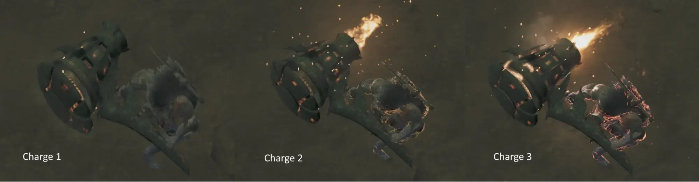

This guide was written by Kat,
Feedback is very welcome either via DMs or in the Monster Hunter Gathering Hub’s Hammer Channel.
Remember to take your time. Don’t compare yourself to others, don’t let anyone tell you how you can and can’t enjoy the game you paid for. This guide does not exist to push a meta onto you, merely to guide those who are a little lost on their way to achieve measurable greatness.
Hammer is a Weapon of Medium Mobility and Strong hits Coupled with its Pretty Close Quarters reach, The Weapon had a Big redesign compared to the Older generation where it's trying to be less Charge centric and more Combo Oriented, We retain the Keeping Sway from Sunbreak at the cost of lowered Distance,
And a Offset-Attack with any UpswingUpswing, Spinning-Bludgeon Upswing, Charged Upswing, Mighty-Charge Upswing. With the Golf-swings you get the ability to hold it and release it as we wish. This makes Hammer have a more Risky Playstyle compared to the older iterations of wanting more Methodical Positioning and timing.
This weapon is for you if you:
Basic Moves:
Hammer Only 2 Mechanics in Wilds Are Charge and Off-set
 Open image in new tabFig.4.0A - Charge Level Indication Via Glow.
Pressing + at charge 3 will Initiate a Mighty Charge.
Timing Your Upswing'sUpswing, Spinning Bludgeon Upswing, Charged Upswing, Mighty-Charge Upswing. With a Monster attack with Result in an Off-set. Offsets will trip the monster backwards and give you a Window to deal Damage, Off-sets Have a Buildup but Landing one will still significantly reduce the damage Taken otherwise.
Hammer has 3 Notable Playstyles:
Charge: Focuses on and Landing as many Charge 3's and Mighty Charge Moves as possible. Tends to favour Snipe/Hit and run Styles.
Triple Pound: A more Off-set Heavy and Risky playstyle based on Weaving attacks in between monster moves and off-setting them if possible.
Spin: A Heavily Elemental based playstyle focused on using Spinning Bludgeon to dish out as much element as possible.
Utility: Charge Step
During Charging or Right after a Dodge, You can press or + Respectively, Doing so will initiate a Charged Step giving you Iframes and letting you keep any charge level if you had been charging.
Big Bang Mighty Charge Slam
The highest damage combo reserved for KO's and Longer Downs.
Big Bang 1 > Big Bang 2 > Big Bang 3 > Big Bang 4 > Mighty Charge > Mighty Charge Slam
> > > > + + > Charge > Release
A Concentrated Combo of 491 MVMotion Value. Blunt Goodness. However it has a very long time and would recommend using Focus 3 if you want to use it since its that long.
Big Bang
in a down where Mighty charge is not possible but you're still close / Have Maximum Might set. Big Bang is still a good relatively quicker combo and leaves you able to chain into a Triple pound For offset.
Big Bang 1 > Big Bang 2 > Big Bang 3 > Big Bang 4 > Big Bang Finisher.
> > > >
Falls slightly Behind the previous combo as it deals 437 MVMotion Value. But is Much faster to do and does not require Focus and more forgiving in windows.
Triple Pound Loop
The bread and Butter of Hammer combos.
Overhead Smash 1 > Overhead Smash 2 > UpswingAlso Commonly named as Golf-swing.
> >
Dont let the length of the combo trick you. this is a very high dps combo should you land it due to its very short time of execution. the final hit of it being an offset means you tend to do this either sniping head hits of fishing of offsets using it.
Triple Pound MCSMighty Charge Slam.
Same as Previous Combo however at the end of the Upswing we do a Mighty Charge input. This is for either downs mid combo or fishing for Flinches and KO's.
Spinning Bludgeon MCuMighty Charge Upswing.
Our Primo elemental Combo. Focused on dishing the most Element on monsters with a heavy elemental head weakness.
Any Move > Spinning Bludgeon 1,2,3,4,5 > Spinning Bludgeon Upswing > Charge > Might Charge Upswing
+ > > + +
Spinning Upswing
Holding While spinning will cost you 1 Tick however will instantly make your Player Hold the upswing when its possible.
Offset Follow-up
You can Spin up to 5 times before you spinout. Pressing Instantly will skip the spin useful if the monster wasnt actually flinched. However spinning out is also useful as you get put into Overhead Smash 2 which means you may chain into another Upswing.
Focus Strike
During the Focus strike spin you can hold the Charge button to charge to instantly Chain into Mighty charge or Not hold it and get put into Overhead Smash for another Upswing chain.
I'm Happy GS sucks this time around.